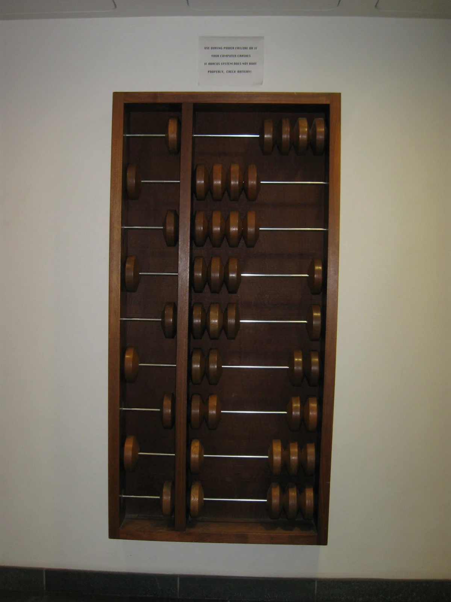
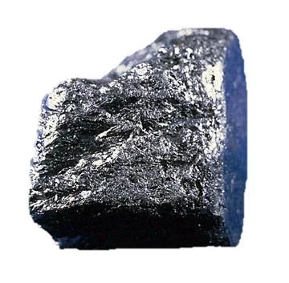
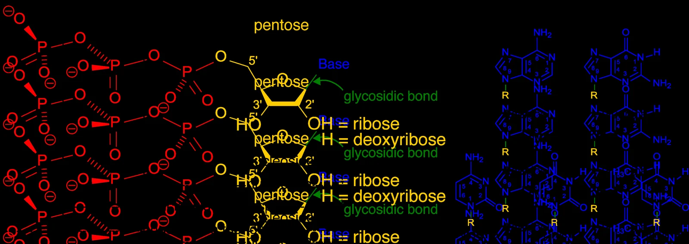
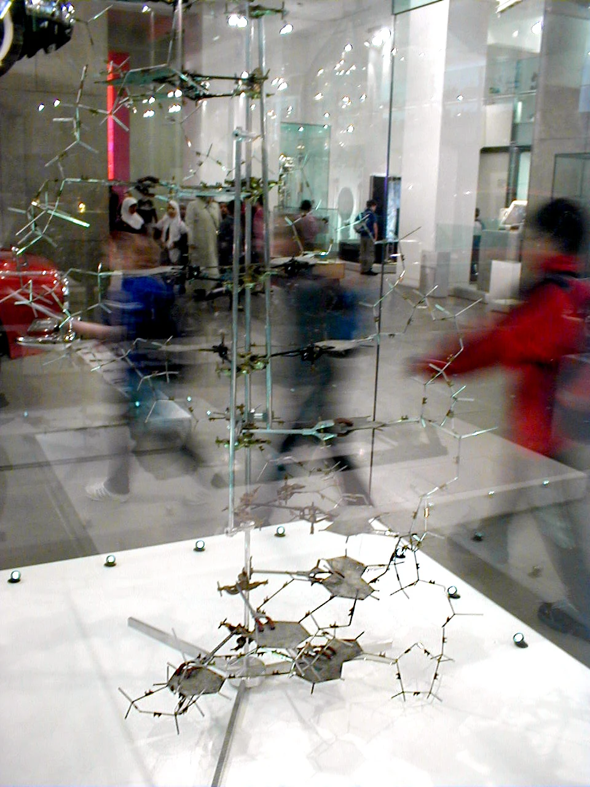
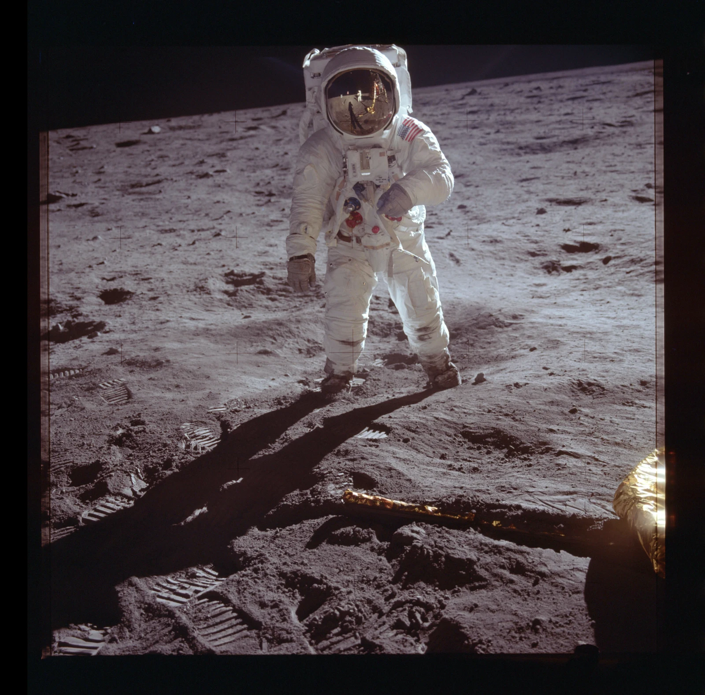
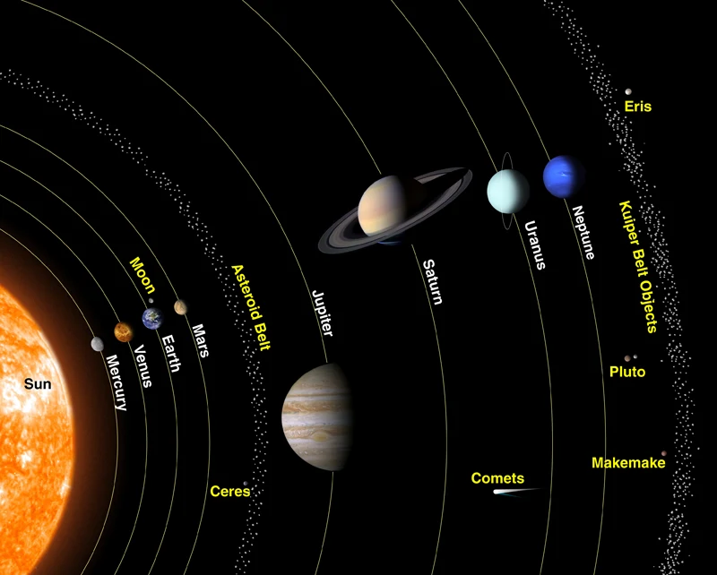
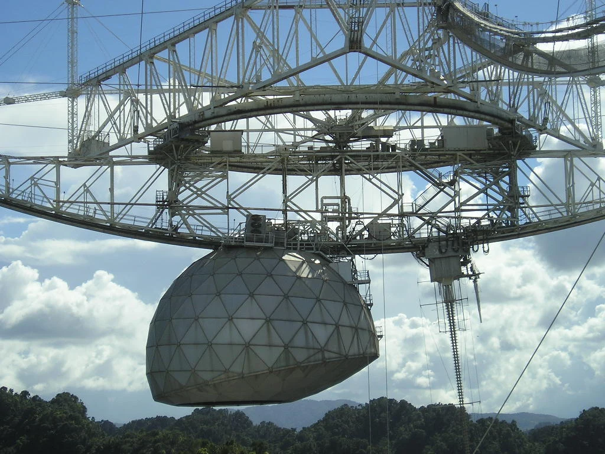

Space Science · Lesson 05 · 1974
The Arecibo Message
In 1974, humanity aimed the world's largest radio telescope at a star cluster 25,000 light-years away and broadcast a binary message. Can you decode what we said?
Message Decoder
InteractiveHover or tap the signal to explore
A portrait of humanity
Seven parts. One message.
Start with numbers. End with the telescope that sent them. Select a section to read our introduction to the universe.







Binary Primer
How it worksThe message contains only 1679 bits — each either a 1 (transmitted pulse) or a 0 (silence). To read it, you must arrange those bits into a rectangle. Only one arrangement makes an image: 23 columns × 73 rows.
Pair this with the binary lab: flip eight bits to build numbers, then paint an 8×8 image before decoding this larger signal. Open Binary, Bits & Logic Gates →
| Decimal | Binary | Decimal | Binary |
|---|---|---|---|
| 1 | 1 | 6 | 110 |
| 2 | 10 | 7 | 111 |
| 3 | 11 | 8 | 1000 |
| 4 | 100 | 9 | 1001 |
| 5 | 101 | 10 | 1010 |